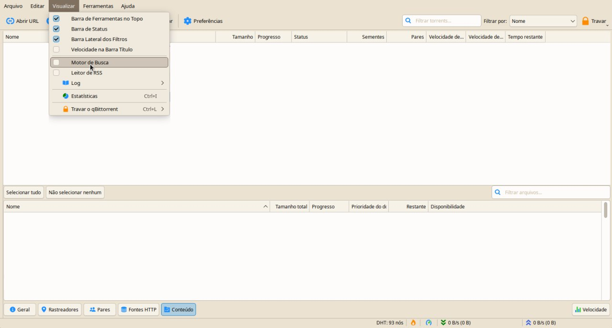
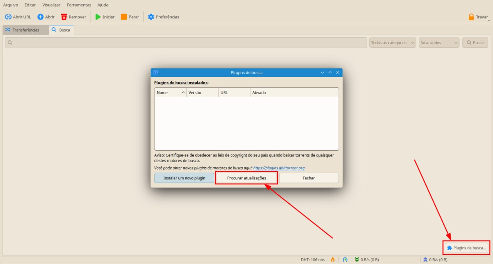
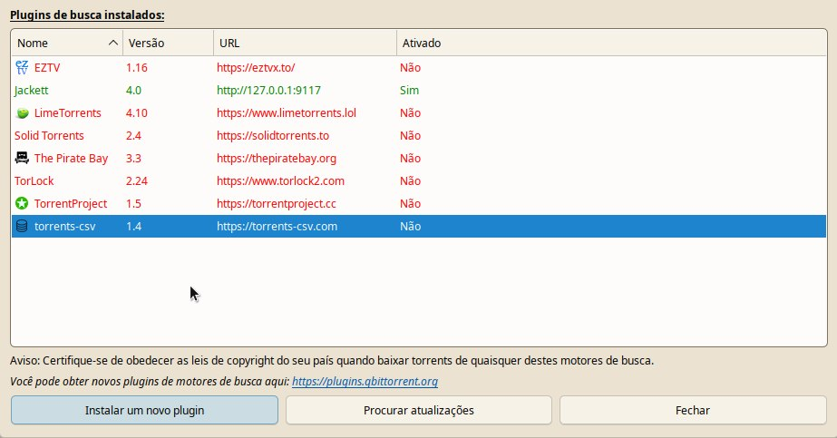

Usando seu qBittorrent da maneira certa
Introdução
Antes de mais nada, vou deixar isso bem claro: NÓS NÃO SOMOS APOLOGISTAS DE PIRATARIA POR AQUI! O conhecimento aqui fornecido pode ser usado tanto de maneira legítima quanto ilegítima, cabe a VOCÊ se responsabilizar pelo que faz! Estamos entendidos? Ok, vamos prosseguir.
Antes de mais nada abra o qBittorrent e habilite o motor de busca:
Você provavelmente não tem nenhum plugin, para começar adicionando plugins você pode seguir o exemplo abaixo, clicando em "Plugins de busca" e depois em "Procurar atualizações" ou "Instalar um novo plugin", você pode utilizar a lista de Plug-ins de pesquisa não oficiais.
E aí fique a vontade para habilitar ou desabilitar qualquer plugin que você deseja.
Jackett
O que é o Jackett?
Segundo o próprio time:
"Jackett funciona como um servidor proxy: ele traduz consultas de aplicativos (Sonarr, Radarr, SickRage, CouchPotato, Mylar3, Lidarr, DuckieTV, qBittorrent, Nefarious, NZBHydra2 etc.) em consultas http específicas do site do rastreador, analisa a resposta HTML ou JSON e, em seguida, envia os resultados de volta ao software solicitante. Isso permite obter uploads recentes (como RSS) e realizar pesquisas. Jackett é um repositório único de lógica de tradução e raspagem de indexador mantida - removendo a carga de outros aplicativos."
Supondo que você esteja no Linux é possível instalar o Jackett com um único comando que baixa, extrai, instala e configura o serviço Jackett em /opt, ajusta permissões, verifica o status do serviço e informa onde acessar a interface web:
cd /opt && f=Jackett.Binaries.LinuxAMDx64.tar.gz && sudo wget -Nc https://github.com/Jackett/Jackett/releases/latest/download/"$f" && sudo tar -xzf "$f" && sudo rm -f "$f" && cd Jackett* && sudo chown $(whoami):$(id -g) -R "/opt/Jackett" && sudo ./install_service_systemd.sh && systemctl status jackett.service && cd - && echo -e "\nVisit http://127.0.0.1:9117"
Caso queira desinstalar o plugin (não sei por qual razão você faria isso) pode usar o comando abaixo:
wget https://raw.githubusercontent.com/Jackett/Jackett/master/uninstall_service_systemd.sh --quiet -O -|sudo bash